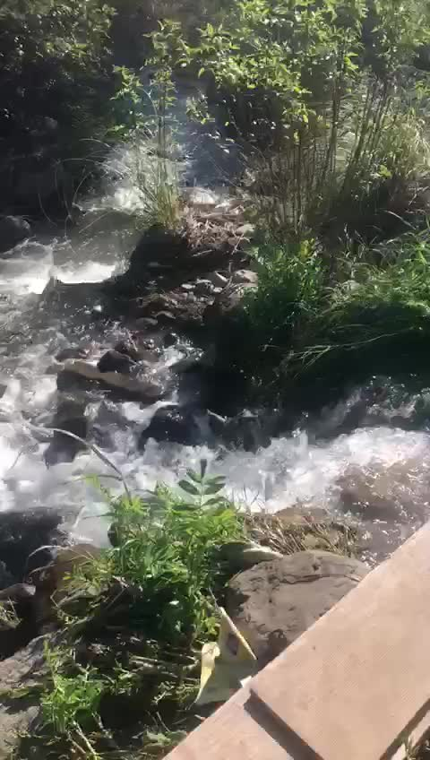

Seguridad para la comunidad
Abordar el riesgo de crecidas con soluciones que consideren a quienes viven junto a la quebrada.
COMUNIDAD · MEDIO AMBIENTE · TERRITORIO
Comité de Defensa de la Quebrada de Ramón, en La Reina. Conoce la causa vecinal que busca proteger el medio ambiente de la precordillera y promover soluciones que cuiden a las personas y a la naturaleza.

01 / EL COMITÉ
La defensa de la Quebrada de Ramón reúne a vecinos de La Reina y Las Condes en una preocupación compartida: reducir el riesgo de crecidas y aluviones sin dañar el medio ambiente ni perder el valor natural y comunitario del lugar.
En marzo de 2025 se documentó la conformación de un comité técnico con profesionales de distintas disciplinas para estudiar el proyecto y difundir observaciones.
Conoce el antecedente vecinalSe documentan la organización vecinal y la campaña de defensa. No se confirma una directiva vigente ni la constitución legal bajo el nombre exacto del comité.
EL ENTORNO EN IMÁGENES
Se comparten registros de vegetación, agua y paisaje aportados para conocer el entorno de la quebrada.


Fotografías aportadas para este sitio. Selecciona una imagen para verla completa.
LO QUE NOS CONVOCA
Se reconoce la necesidad de protección aluvional y se propone integrarla con la recuperación del entorno.
Abordar el riesgo de crecidas con soluciones que consideren a quienes viven junto a la quebrada.
Estudiar la recuperación del suelo, la arborización y la vegetación como parte de la respuesta.
Acercar antecedentes técnicos, facilitar el diálogo y dar visibilidad a la propuesta de los vecinos.
Síntesis de la posición vecinal expresada en el documento aportado, láminas 8 y 9.
DOSSIER ABIERTO
¿Qué contempla el proyecto de control aluvional del MOP? ¿Qué preocupa a los vecinos? ¿Qué alternativa proponen?
Explora los antecedentes ↗retenedores de 18 a 24 m de profundidad, con 8 a 10 años de obras según los documentos vecinales
Una decisión que requiere información, participación y una mirada sobre toda la cuenca.
Ver descripción del SEALA INFORMACIÓN ES EL PRIMER PASO
Consulta los documentos y visita los canales publicados por la campaña para seguir la defensa de la quebrada.
Presentaciones, cartas, actas y análisis de la comunidad, reunidos en un solo lugar.
Ir a ArchivosCanales identificados en la petición pública “Cuidemos Quebrada de Ramón”.
Una iniciativa para solicitar que se estudien alternativas que conserven el entorno natural.
Ver petición en Change.org